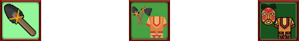

TheLastKnights is a Social Strategy Game that I started playing in 2009. Between 2019 and 2022 I created illustrations and over 200 icons that were used for the new maps.

1-D: Define
Outlining the task
My task was to craft icons that are historically and geographically accurate for Africa and the Americas. I did research on the types of armies used during the colonial era. My goal was to document each country or tribe that was going to be featured in the game.
1-D: Define
Icon categories
The icons are divided in 3 categories: units, items, and country flags, and each is divided in 3 more subcategories.
2-D: Design
Setting the artboard
The unit icons for the Europen and Asian maps have a rusty, pixelated border. The source file was unavailable so I had to recreate it.
2-D: Design
Progression between the tiers
I used related symbols to create a clear relationship between each tier of the same unit. In the case of Africa’s Masaai line, at tier 1, the unit is represented by a rudimentary weapon, at tier 2 the weapon is improved and a knitted shirt is added. At tier 3 an African style mask replaces the weapon.
2-D: Design
Progression between the tiers
The Americas’ Native line is also a good example. At tier 1 Natives are represented by a head piece decorated with colourful featers. At tier 2 the Native Archer is represented by a bow and arrow. The Brave, its tier 3, is a combo of the previous 2 tiers: a colourful head piece and a bow.
3-D: Deliver
Exporting the assets
I exported each icon as a 60x60 .png and 1024x1024 .svg. I sent them over to the TLK development team using WeTransfer, and made myself available for redesigns until everything was moved into production.